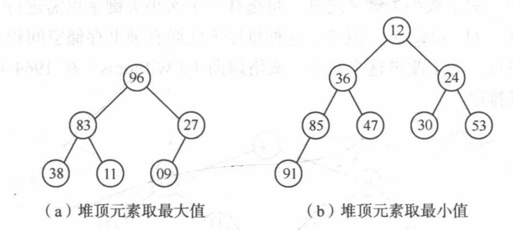

# 堆排序
堆排序是一种树形选择排序，在排序过程中，它将待排序的记录看成是一颗完全二叉树的结构，由于它在最坏情况下表现也十分好，所以广泛使用在各个语言下的 sort 源码中。
# 堆排序的定义
n 个元素的序列称之为堆，当且仅当满足以下其中一个条件：
- Ki <= k2i 且 ki <= k2i+1 (0<=i<=n/2)
- Ki >= k2i 且 ki >= k2i+1 (0<=i<=n/2)
用语言表示，即：树中所有非终端结点的值均不大于（不小于）其左右孩子的值

# 思路
- 按堆的定义将待排序序列 list [0...n-1] 调整为大根堆（即建初堆），交换 list [0] 和 list [n-1]，则此时列表最后一个元素为最大的元素。
- 将 list [0...n-2] 重新调整为堆，交换 list [0] 和 list [n-2]，则列表倒数第二个元素为次大的元素。
- 循环 n-1 次，知道交换了 list [0] 和 list [1] 为止。
其实和插入排序的思路有点像，就是每次把一个剩下维护序列里面的最大元素抽取出来，放到一个位置上，直到这个剩下维护序列长度为一即可。但是它快就快在调整堆这个过程。
综上，需要解决两个问题：
- 建初堆（如何将一个无序序列建成堆？）
- 调整堆（去掉堆顶元素后，将剩下元素调整成新堆）
# 调整堆的思路
筛选法，把不符合堆的元素逐步下沉，然后把大的元素逐步上浮。
- 当前根结点为 s，则他的左右子树为 2s 和 2s+1，选出左右子树中较大的结点
- 比较 s 和较大子树结点的值，如果 s 较大，则说明树已经是堆，不需调整
- 如果 s 较小，则交换（交换后，较大子树结点的子树不再是堆，重复上述过程调整）
参照下文代码 HeapAdjust
# 建初堆的思路
要把一个无序序列调整成堆，按照定义，则需让非终端结点大于其左右子树的值，所以序号小于 length/2 的都是非终端结点。
利用筛选法，自底向上把 (n/2)....0 的结点调整成堆即可。
# 堆排序整体思路
结合起来，就是
- 将一个无序数组调整成堆，然后抽取堆顶元素，和当前无序的最后的位置元素交换。
- 当前无序数组减去最后位置，剩下的重新调整成堆
# 特点分析
时间复杂度
平均情况：O (nlog2n)
最坏情况：O (nlog2n)
即使在最坏情况下，时间复杂度仍然为 O (nlog2n)，相比快速排序的最坏情况是一个优点，可以在快速排序退化时采用。
空间复杂度：O (1)
是不稳定排序（跳跃式的交换都是不稳定排序）
只能用于顺序结构。
# 总结
适用于记录数较多或递归树较深的时候采用。
# 完整堆排序代码
function HeapAdjust(list,s,m){ | |
// 假设 list [s+1...m] 已经是堆，将 list [s...m] 调整为以 list [s] 为根的大根堆 | |
let rc = list[s]; | |
for(let j = 2*s;j<=m;j*=2){ | |
if(j<m&&list[j]<list[j+1])++j; | |
if(rc>=list[j])break; | |
list[s]=list[j]; | |
s=j; | |
} | |
list[s] = rc; | |
} | |
// 建初堆 | |
function CreateHeap(list){ | |
let n = list.length-1; | |
let mid = Math.floor(n/2); | |
for(let i = mid;i>=0;i--){ | |
HeapAdjust(list,i,n); | |
} | |
} | |
// 堆排序，先把无序序列建成堆，然后每次把堆顶元素抽出来放到对应的位置 | |
function HeapSort(list){ | |
CreateHeap(list); | |
for(let i = list.length-1;i>0;--i){ | |
let x = list[0];// 堆顶记录和当前未经排序子序列最后一个记录互换 | |
list[0] = list[i]; | |
list[i] = x; | |
HeapAdjust(list,0,i-1);// 将 list [0...i-1] 重新调整为大根堆 | |
} | |
} |